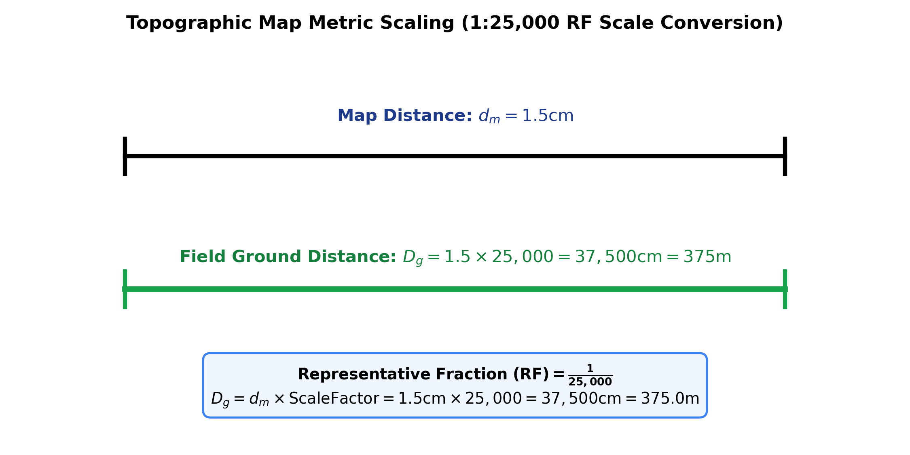
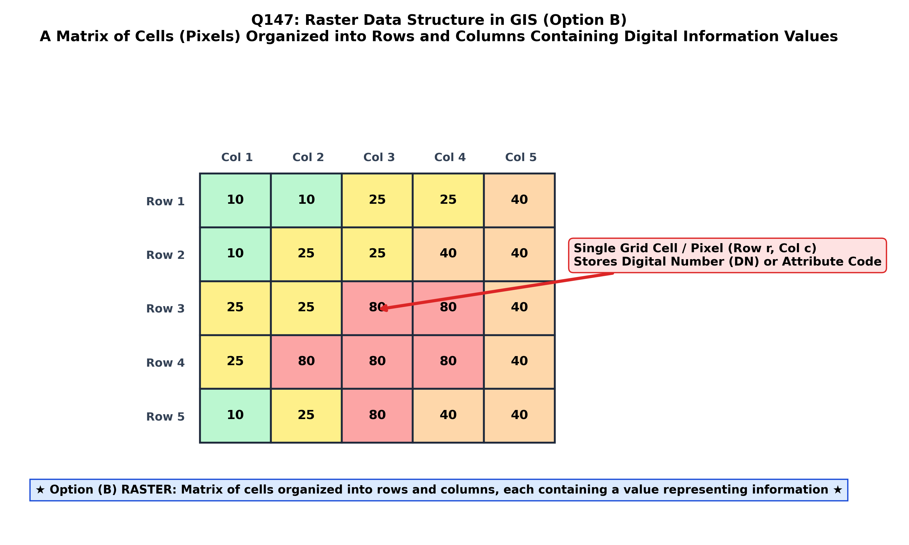
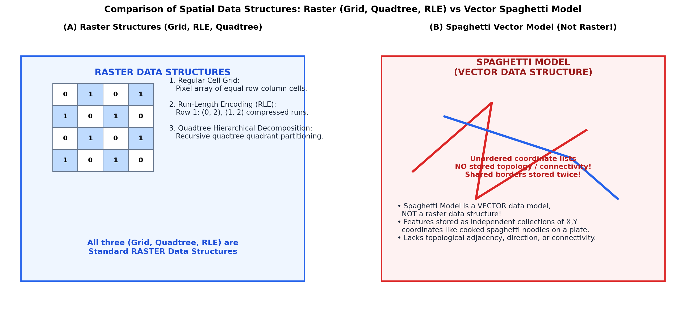
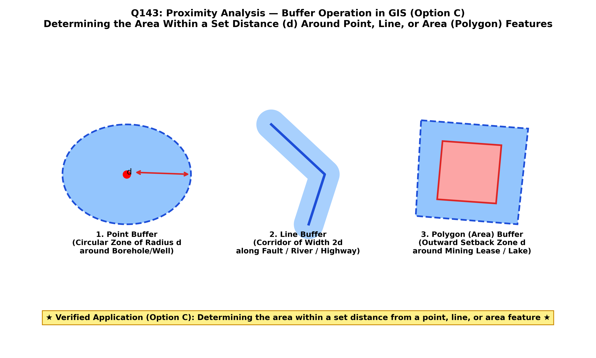
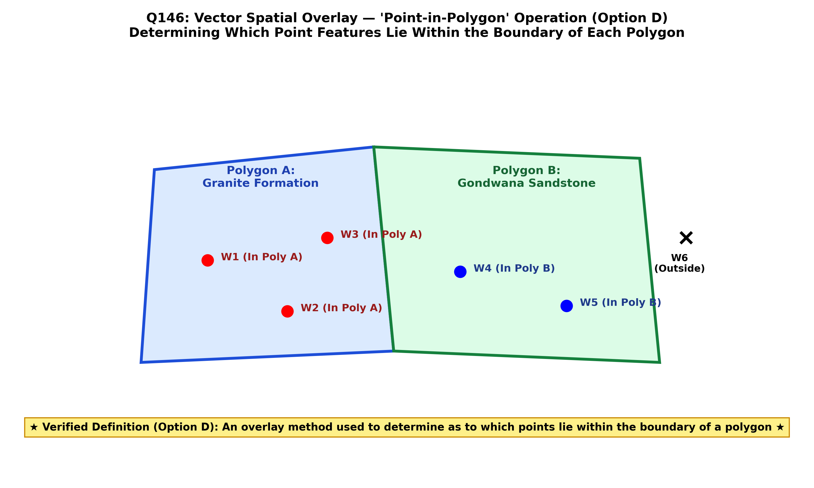
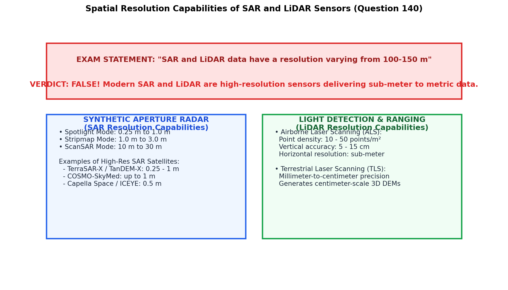

12.1 Geological and Topographic Maps


A Geological Map shows the surface distribution, lithology, contacts, and structural attitudes (dip, strike, folds, faults, unconformities) of rock formations plotted over a Topographic Map. Relief is depicted by Contour Lines—imaginary lines connecting points of equal elevation above mean sea level. Closely spaced contours indicate steep slopes; widely spaced contours indicate gentle slopes; contours bend into V-shapes pointing upstream when crossing river valleys; and contour lines never cross each other (except in overhanging cliffs).
12.3 Outcrop Patterns and the Rule of V's

An Outcrop is the exposure of bedrock at the ground surface. Its map pattern is governed by bed attitude and topography:
(i) Horizontal Beds. Outcrop boundaries run strictly parallel to topographic contour lines (forming a V pointing upstream in valleys).
(ii) Vertical Beds. Outcrops cut across ridges and valleys in straight lines completely independent of topography (no V-pattern).
(iii) Inclined Beds (Rule of V's). When dipping beds cross a valley: (a) if beds dip upstream, the V points upstream; (b) if beds dip downstream steeper than the valley gradient, the V points downstream; (c) if beds dip downstream gentler than the valley gradient, the V points upstream; and (d) if dip equals valley slope, outcrops run parallel along the valley sides without crossing the stream.
Folds, Faults & Unconformities on Maps. Folds show symmetrical repetition of strata across the axial trace (plunging folds form curved V-closures). Faults abruptly offset, truncate, repeat, or omit beds along linear traces. Unconformities show younger strata truncating older tilted/folded structures.
12.5 Geological Cross-Sections, Bed Thickness & Three-Point Problems
- True Stratigraphic Thickness ($t$): From outcrop width $W$ on flat ground: $t = W\sin\theta$. From vertical borehole depth $D$: $t = D\cos\theta$.
- Three-Point Problem: Connect Highest ($H$) and Lowest ($L$) bed elevations; interpolate point $P$ matching Intermediate ($I$) elevation along $HL$. Line $IP$ is the True Strike Line, and dip is $\tan\theta = \frac{\Delta h}{d_\perp}$.
Drawing Cross-Sections. A topographic profile is constructed along a section line $AB$ by transferring contour elevations onto graph paper. Geological contacts, faults, and dips are projected onto the surface profile and extended downward using strike lines and dip angles to reveal subsurface structure.
- True Thickness on Sloping Ground: If ground slopes at angle $\delta$ in the same direction as bed dip $\theta$, $t = W\sin(\theta - \delta)$; if opposite to dip direction, $t = W\sin(\theta + \delta)$.
- Modern Engineering GIS: Geological map polygons, borehole points, fault polylines, and LiDAR Digital Elevation Models (DEMs) are integrated in geodatabases to perform Landslide Susceptibility Zonation (LSZ) and 3D subsurface tunnel-corridor modeling.
Determining True Thickness ($t$). On horizontal terrain where outcrop width perpendicular to strike is $W$ and true dip is $\theta$, $t = W\sin\theta$. If a bed is intersected vertically in a borehole over vertical depth $D$, $t = D\cos\theta$.
Three-Point Problem. When a planar stratum or coal seam is encountered at three non-collinear boreholes or surface points ($A, B, C$) of known elevations, its true strike and dip are found by joining the highest and lowest points, interpolating a point of equal elevation to the intermediate point to establish the True Strike Line, and measuring the perpendicular drop to find the true dip angle.
Chapter Review Questions (K. M. Bangar)
1. What are topographic contours? State their properties and explain how hills, valleys, and cliffs are recognized on contour maps.
2. Explain the Rule of V's for outcrops of horizontal, vertical, and inclined strata crossing a river valley.
3. How are folds, faults, and unconformities identified on a geological map?
4. Describe the graphical three-point method for determining the strike and dip of a coal seam from three borehole records.
Visual Reference Gallery (Clean Color Diagrams & Specimens)
Supplementary full-color diagrams from Winter, Perkins, Fossen, Boggs and high-resolution USGS/Wikimedia photographs replacing scanned textbook drawings.






